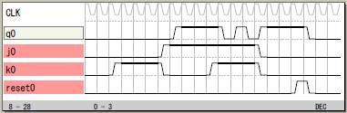

記憶
L言語では、すべての記憶はチップCLKの立ち上がりエッジ
で入力から出力に固定されることを前提にしています。
記憶される論理の例にJK記憶を示します。
記憶信号は bitr で定義された nq です。
JK記憶の機能を部分的に利用してRS記憶のようにも使え
ます。
L言語では同期式を前提にしているので非記憶の論理式
と記憶の論理式での違いはありません。
言語設計においてはTTLの時代のようなJK記憶やRS記憶
カウンタやシフトレジスタや比較器などを個々固定化
された部品として考える必要はないと考えます。
論理設計の深層についてよく考察することが、より大きく
なるこれからの論理設計に必要だろうと思っています。
L言語はブール代数を言語表記するための言語です。
記憶を同期式に限定することで大変簡単な式であらゆる
論理設計の課題を明瞭に記述できるようになったと思い
ます。

論理譜
logicname yahoo27
entity main
input reset;
input j;
input k;
output q;
bitr nq;
if (reset)
nq=0;
else
switch(j,k)
case 0,0: nq=nq;
case 0,1: nq=0;
case 1,0: nq=1;
case 1,1: nq=!nq;
endswitch
endif
q=nq;
ende
entity sim
output reset;
output j;
output k;
output q;
bitr tc[8];
part main(reset,j,k,q)
if ((tc<5)|(tc==25)) reset=1; endif
tc=tc+1;
if ((tc>=10)&(tc<=13)) j=0; k=1; endif
if ((tc>=14)&(tc<=17)) j=1; k=0; endif
if ((tc>=18)&(tc<=21)) j=1; k=1; endif
ende
endlogic
|